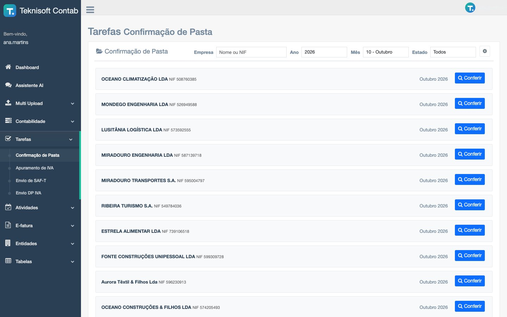
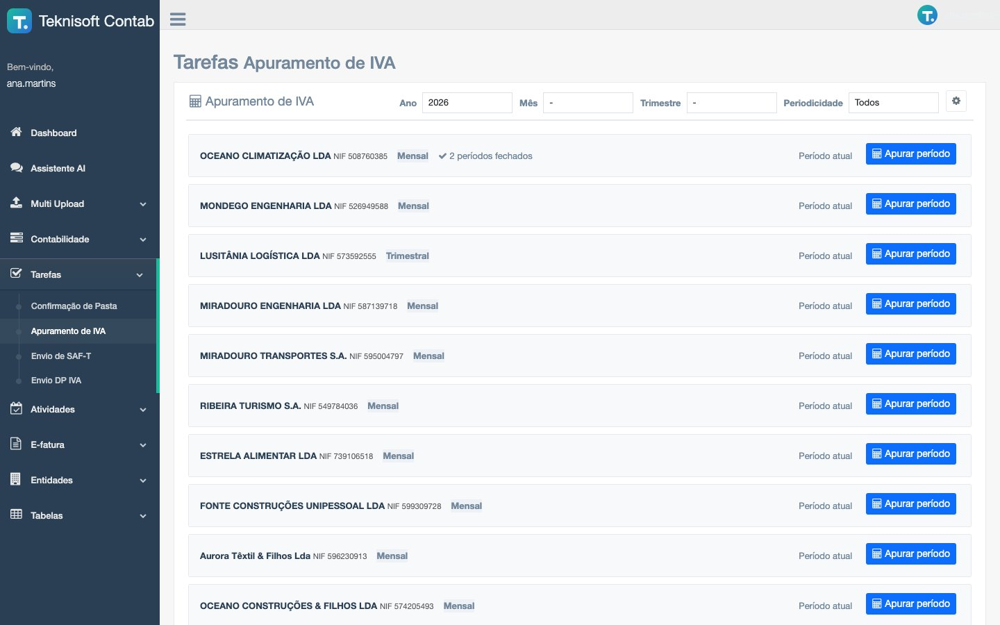
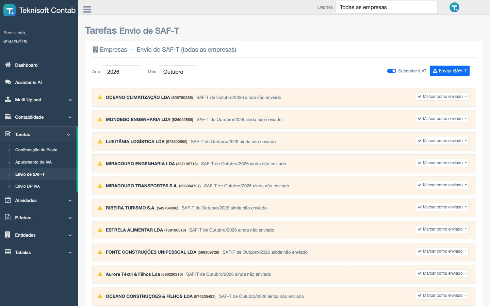
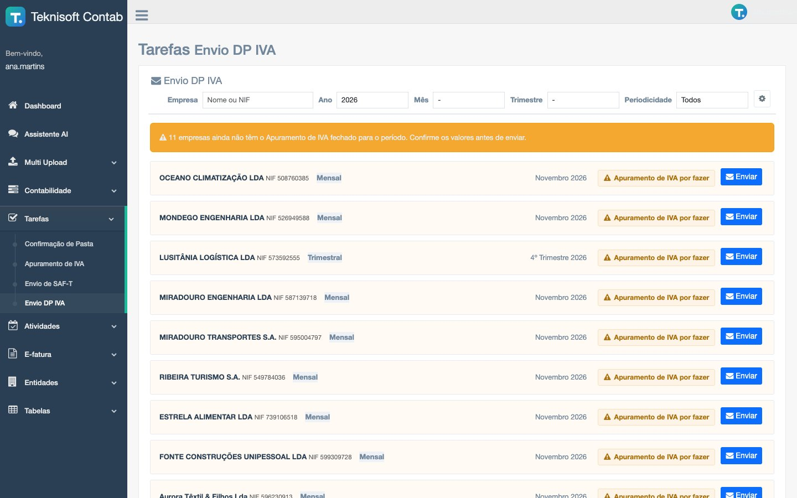

Tarefas de fecho
O menu Tarefas organiza o fecho mensal de cada cliente: conferir a pasta, apurar o IVA, enviar o SAF-T à AT e comunicar a declaração periódica ao cliente. Cada tarefa compara automaticamente o que está na contabilidade com a fonte oficial e regista quem fechou e quando.
- Cada técnico vê só os clientes em que a tarefa lhe está atribuída (Entidades > Admin); administradores veem todos.
- Filtros no topo: empresa, ano, mês/trimestre e estado (por fechar, fechados, todos).
- O botão de engrenagem (⚙) no canto superior direito, só para administradores, abre a configuração da tarefa (fórmulas, modelos de e-mail).
- O fecho fica registado com utilizador, data, resumo dos valores e observações.
Confirmação de Pasta
Tarefas > Confirmação de Pasta. Confirma, mês a mês, que tudo o que estava na pasta física/digital do cliente foi lançado.

O que se confere
| Comparação | Como funciona |
|---|---|
| Lançado (ERP) vs. fita, por diário | Para cada diário (Caixa, Bancos, Vendas, Compras, Diversos, Imp. e-fatura, Recibos, Pagamentos...), o total a crédito lançado no ERP é comparado com os valores de controlo (a "fita") introduzidos pelo técnico. Verde quando bate ao cêntimo, vermelho quando não. |
| SAF-T vs. contabilidade | Total de débitos e créditos do(s) SAF-T de faturação do mês comparados com as fórmulas do balancete configuradas. |
Passos
- Escolha o mês (por omissão, o mês anterior) e clique em Conferir no cliente.
- Em cada diário, Conferir mostra à esquerda a fita (editável: escreva valores e prima Enter; aceita vários de uma vez separados por
+ou;) e à direita os documentos lançados. Os valores sem par ficam a vermelho. - Reveja as caixas Total Débitos / Total Créditos (SAF-T vs. Ctb).
- Fechar etapa. As divergências não bloqueiam, mas a aplicação pede confirmação e regista quantas havia.
Apuramento de IVA
Tarefas > Apuramento de IVA. Reconcilia, campo a campo, a Declaração Periódica de IVA gerada no ERP com o que resulta do balancete.

- Escolha ano e mês ou trimestre; o período respeita a periodicidade de cada cliente.
- Apurar período abre o detalhe: uma linha por campo da DP com o valor da DP (ERP), o valor de controlo da contabilidade (fórmula sobre o balancete) e o estado.
- Estados: ✓ ok ! aviso ⚠ erro (bloqueia), com a diferença no tooltip.
- Em Resultado do período vê o IVA a pagar (campo 93) ou a recuperar (campo 94) e fecha o período.
Validações automáticas
- Campos de IVA validados contra a base × taxa (6%, 13%, 23%), com margem de erro de 1 €.
- Campos de taxa desconhecida (13, 17) testam as três taxas e aceitam a de menor desvio.
- Se o ERP ainda não tiver a DP do período, os valores podem ser introduzidos manualmente e guardados.
As fórmulas de cada campo escrevem-se como soma/subtração de saldos de contas, por exemplo C2432319cre-C243234deb+ (saldo credor da 2432319 menos o devedor da 243234). Editam-se na engrenagem da tarefa.
Envio de SAF-T
Tarefas > Envio de SAF-T. Submete à AT o ficheiro SAF-T de faturação de cada cliente (comunicação mensal de faturas) e guarda os totais para as restantes tarefas.

- Escolha ano e mês. Clientes por enviar aparecem a amarelo.
- Enviar SAF-T e escolha o ficheiro XML. O cliente é reconhecido pelo NIF do ficheiro.
- Com Submeter à AT ligado, o ficheiro é enviado pelo cliente oficial da AT (FACTEMICLI), com as credenciais do portal guardadas para o cliente. A resposta (código, totais, avisos, erros) fica registada.
- Com Submeter à AT desligado (cliente que comunica sozinho), o ficheiro é apenas arquivado e os totais extraídos, com estado "importado".
- Marcar como enviado regista o envio feito por outra via.
Java 8 ou superior no servidor, o jar FACTEMICLI carregado em Definições > Serviços e relógio do servidor sincronizado (caso contrário a AT responde "Validade da credencial expirada"). Use o Modo teste para formação.
Envio DP IVA
Tarefas > Envio DP IVA. Comunica ao cliente, por e-mail, o resultado da declaração periódica: valor a pagar, a recuperar ou em crédito, e a data-limite de pagamento.

- O valor vem do fecho do Apuramento de IVA do mesmo período (ou, em falta, do balancete). Um aviso indica se o período ainda está "Por apurar".
- Enviar abre o e-mail: destinatário (e-mail do cliente no ERP), cópia para o técnico, assunto e mensagem editáveis, anexo opcional (guia de pagamento).
- A data-limite é calculada (dia 25 do segundo mês seguinte ao fim do período).
- Com "Fechar tarefa após o envio", o período fecha quando o e-mail chega ao cliente; Fechar sem enviar regista o fecho sem e-mail.
O modelo do e-mail (administradores, na engrenagem) aceita marcadores como {nome_cliente}, {nif}, {periodo}, {mensagem_valores}, {data_limite} e {nome_utilizador}.